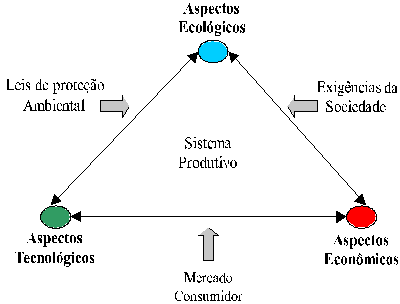

LMP>Linhas de Pesquisa>DUECO>Usinagem Ecológica
INTRODUÇÃO Nos últimos anos o consumo de energia, a poluição do
meio ambiente e os resíduos industriais têm despertado especial
atenção por parte das autoridades públicas. Motivados
pela pressão dos órgãos ambientais, os governantes têm
elaborado leis cada vez mais rigorosas no sentido de proteger o meio ambiente
e preservar os recursos energéticos. OBJETIVOSEsta linha de pesquisa objetiva avaliar as reais influências tecnológicas sobre os principais processos de usinagem com ferramentas de geometria definida (torneamento, furação e fresamento) ocasionados pela redução e/ou eliminação do uso de fluidos de corte nestas operações. De modo geral a avaliação abrange:
DESENVOLVIMENTO DA PESQUISAA necessidade de investigar este tema vem crescendo na medida que os aspectos ecológicos tornam-se fundamentais dentro da estratégia de produção das empresas. Sem dúvida, a usinagem a seco se mostra como a melhor alternativa para resolver os problemas causados pelos fluidos de corte, onde combinam-se vantagens ecológicas e econômicas. Por estar em fase inicial de investigação, existem muitos problemas a serem estudados e resolvidos. As primeiras pesquisas indicam que é possível usinar a seco em muitos casos, entretanto não é possível usinar totalmente a seco em todos os casos. Nestes casos, porém, é possível reduzir a quantidade de fluido de corte reforçando algumas características fundamentais a cada processo. Tanto a redução como a eliminação dos fluidos de corte são as principais metas dos atuais estudos nesta área.  Fatores a serem considerados em um processo produtivo |
| Contato:
DUECO Rolf Bertrand Schroeter Prof. Dr. Eng. |
Última Atualização 21.06.2006 |